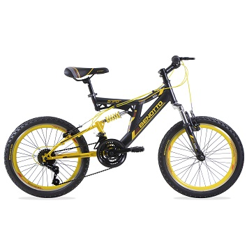

BENOTTO SNIPER 21V

Es momento de sentir la verdadera adrenalina a lo largo de las montañas con la nueva BENOTTO SNIPER 21V, con esta bicicleta alcanzarás la velocidad al maximo y conocerás una infinidad de territorios, tambien es la bicicleta adecuada para que salgas a rodar y te traslades de un lugar a otro a lo largo de la ciudad. Es comoda ya que cuenta con un amortiguador resistente que te brindará comodidad al momento de saltar, su color gris oscuro con amarillo te harán lucir fantastico, su cuadro de acero Hi Ten es de gran calidad así mismo como su manubrio Hi Ten tambien te proporcionará facilidad de conducir. Además de que cuenta con 18 velocidades que podrás utilizar a tu gusto y preferencia.